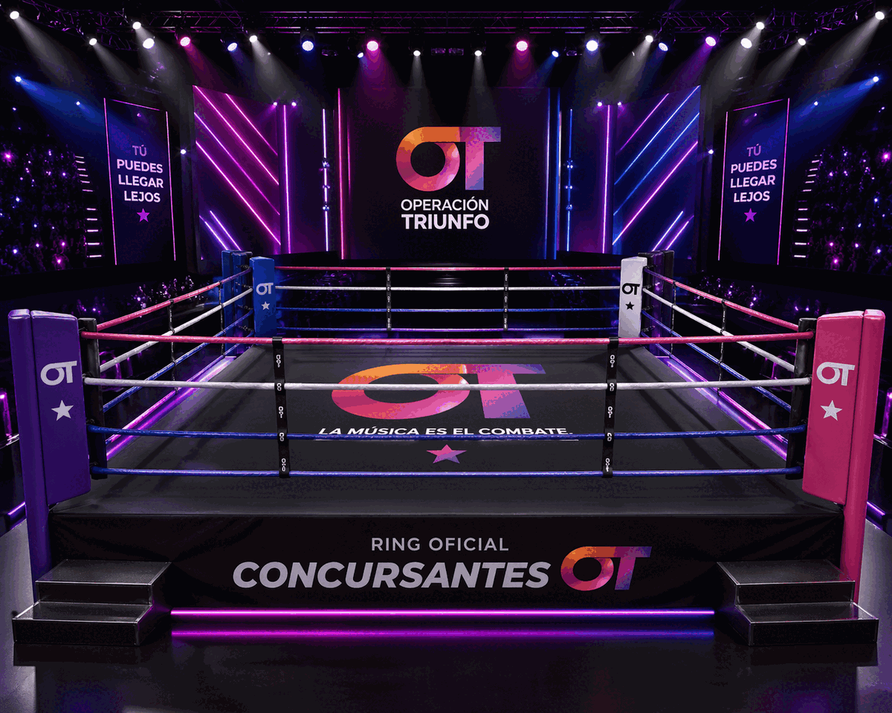
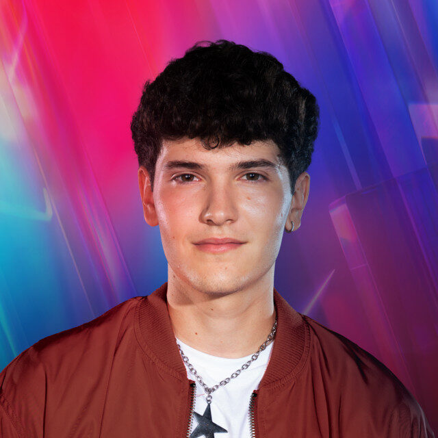
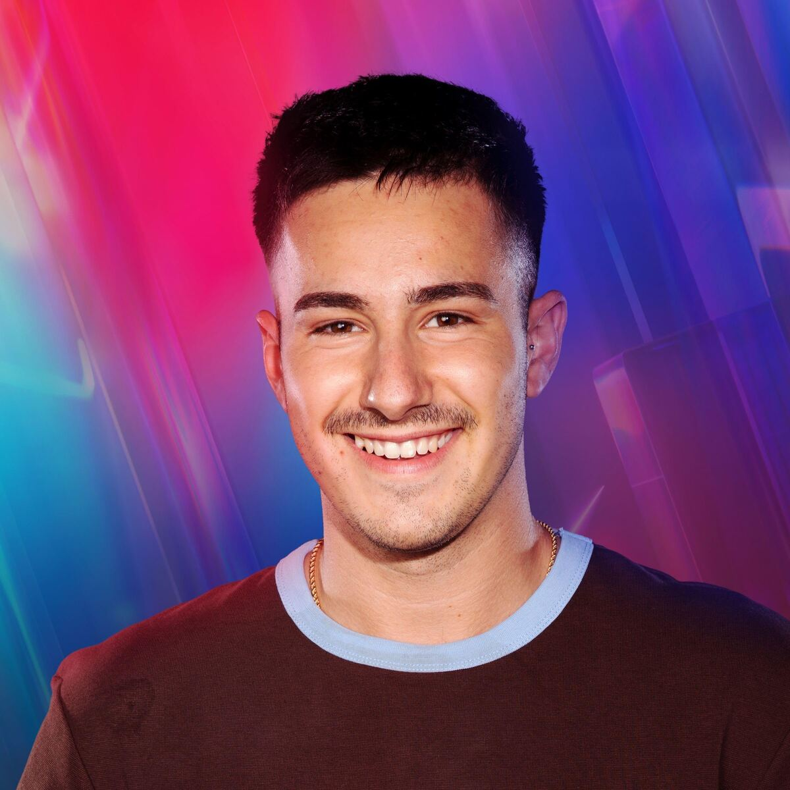

Eventos · 2026
La Velada del Año VI
Micrositio ficticio para presentar un evento de boxeo, sus participantes, entradas e información práctica.

Contexto
Promocionar un evento
El objetivo era crear una web capaz de transmitir la energía de un evento cultural y animar al público a asistir.
La propuesta adapta el formato de La Velada a participantes de Operación Triunfo 2025 dentro de un ejercicio académico ficticio.
Proceso
Un programa visual
Los combates se organizaron con CSS Grid y tarjetas. La información de entradas y horarios se separó en bloques fáciles de consultar.


Resultado
Una identidad directa
El sitio utiliza una tipografía expresiva, contraste de color y una composición responsive para presentar el evento en móvil y escritorio.
Ficha técnica
- Año: 2026
- Asignatura: Diseño Web
- Herramientas: HTML y CSS
- Tipo: Micrositio ficticio